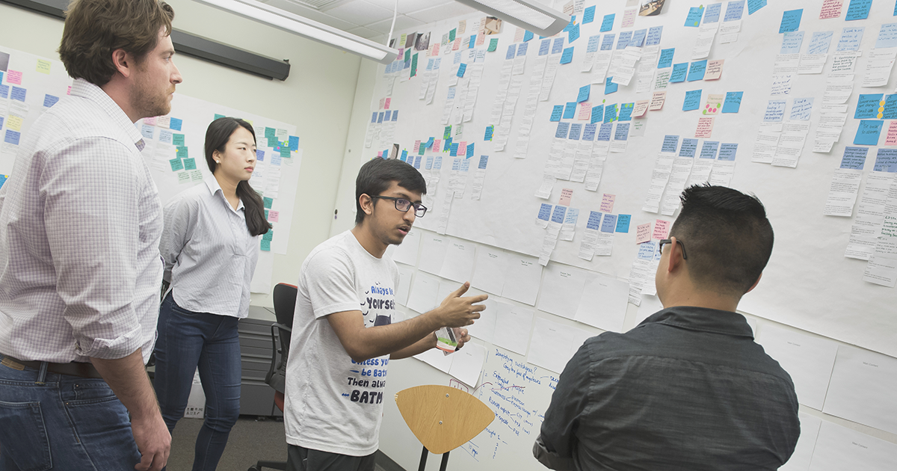

How did we ensure our design fits reviewers' needs?
A large part of our sprint
planning that involved active design was how to validate our design. From low-fi to
high-fi, different prototypes were used to probe distinct questions related to our users’
needs. Also, for our project, we are invested in ensuring making the design right as well as
making the right design. This required us to design a variety of activities to validate our
design and gain deeper knowledge of our user group.
As a result, our team came up with 4 design verification and validation methods, applied to
different rounds of user testing.
Contextual interview was the most-used validation activity we conducted throughout our iterations. By conducting interviews and asking reviewers to use our system to review applications, we were able to get honest feedback about our prototypes. For all the prototypes we had, we asked reviewers to think aloud and conduct an application review.
We looked for both people with and without previous review experience to look at our system as reviewers and new users. In addition, for people with review experience, we didn’t limit ourselves to faculty reviewers at universities, but also recruiters in the industry and PhD students who also participated in PhD student reviews.
However, the number of interviews we could conduct in a 2-week sprint was limited by the availability of our teammates. In order to maximize the feedback we could get, we also used a platform called maze.co to conduct automated and unmoderated testing sessions by pre-defining tasks interviewees will go through. Our participants will go on maze to finish the set of tasks in our system on their own time, and maze will help us collect much quantitative and qualitative data. Some data from maze such as the error rate of clicks in our prototype is hard to gather during traditional testing sessions.
As an additional part of our learning process, during some of our capstone classes every Tuesday and Thursday, we held cohort cross-critique with other capstone teams. Each session lasted about 1 hour where we were paired with another capstone team to receive and provide feedback.
During these sessions, we were able to talk with teams working with clients including Bloomberg, NASA, SWAPPA. All the capstone projects were diverse in the topics, for example, the three teams mentioned above were individually working on creating an internal system for data scientists to train machine learning models, asynchronous communication between astronauts and ground control, as well as helping people with accessibility needs navigate around locations. Talking to teams working in a completely different domain brought us new perspectives on our design.
In addition to the cohort cross-critique, our team reached out to UX designers, graphic designers, as well as interface designers for design critique on our more refined prototypes. We conducted design critique on more defined prototypes, since it’s less useful for having designers look at our low-fi interfaces that are not fully decided. In all, we were able to get 6 designers and reviewers to look at our interfaces and provide valuable feedback for us.
Another important piece of data we needed to validate our design is how much our system, mostly the annotation and comment component, can help reviewers have more effective and efficient conversations during admission meetings. Theoretically, by having highlights and annotations on raw application materials in ApplyGrad, reviewers can easily see important elements in application materials during the committee meetings and quickly recall reasons for evaluating an applicant in certain ways.
To figure out if this is really the case, we organized 4 simulation admission committee meetings with reviewers from programs including MHCI, METALS, MSE, and HCII PhD at SCS. We asked for real students from these programs for their application materials to recreate an authentic review experience. Before the committee meeting, we asked reviewers to review an application and put highlights and comments if they wish in the materials. Each application will be reviewed by at least two reviewers in the committee. Reviewers’ general comments and evaluations were recorded in committee review forms. A few days later, reviewers from the same committee came together on Zoom to discuss the assigned applications. A decision to admit the applicant or not was made at the end of the discussion. We conducted a short interview regarding reviewers’ experiences with the highlight and annotation system afterward.
In general, we gathered many positive comments from reviewers regarding how our design could help them in committee meetings. Reviewers on average scored our feature 4 out of 5 regarding its usefulness based on their interaction with it. The comments they left previously in the system greatly assisted them in recalling their evaluation, and seeing other reviewers’ notes helped them to identify potential areas of discussion during the meetings. Only 2 reviewers expressed they might not fit adding highlights and comments into their workflow purely for personal preferences – even in these cases, they felt positive about seeing other people’s notes.